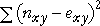

Comparison of observed and estimated cell counts
The hypothesis of independence is assessed by asking whether the observed and estimated cell counts are 'sufficiently close' — are the observed counts consistent with the counts estimated under independence?
Skiing injuries
If skiing ability and injury are indeed independent, then the observed cell counts in the sample data should be similar to these estimated cell counts.
| Injured | Uninjured | Total | |
|---|---|---|---|
| Beginner | 20 (11.59) |
60 (68.41) |
80 |
| Intermediate | 9 (13.47) |
84 (79.53) |
93 |
| Advanced | 2 (5.94) |
39 (35.06) |
41 |
| Total | 31 | 183 | 214 |
Hypotheses
Did a sample contingency table come from a population in which the categorical row and column variables, X and Y are independent? This question can be formalised as the hypothesis test,
H0 : X and Y are independent
HA : X and Y are dependent
Possible test statistic?
In order to assess whether the data are consistent with the null hypothesis, we ask whether the observed cell counts in the contingency table, nxy, are similar to the estimated cell counts based on independence, exy. The simplest measure of their match is the sum of squares of the differences,

Small values of this statistic are expected when there is independence in the underlying population. However it does not behave entirely as desired. To be useful, a test statistic must have a known distribution when H0 is true and, ideally, this distribution should not depend too much on specific characteristics of the problem.
The raw sum of squares has a distribution that depends on the sample size and on the marginal probabilities.
It would be very unusual for a cell in a contingency table with estimated cell count exy = 1 to have observed cell count nxy = 11. However if the estimated cell count is exy = 1001 then sampling variability would mean that an observed cell count of nxy = 1011 would not be unusual. Yet the difference is the same in both cases.
The raw sum of squares must be interpreted differently, depending on the size of the estimated cell counts, so it is a bad test statistic.
Distribution of sum of squares
The blue values in the contingency table on the left below have been sampled from a population in which each of the row categories is equally likely (with marginal probability 1/3), each column category is equally likely (marginal probability 1/3) and the row and column categories are independent. All joint probabilities are therefore know to be 1/9.
Click Sample a few times to observe the variability of the blue observed counts, nxy.
The estimated counts, exy, obtained from the margins of the table, are also shown in red. Observe the variability in the differences and their sum of squares.
Increase the sample size from 100 to 1000 and repeat. Observe that the differences are usually higher. Increase the sample size to 10000 and observe that the statistic is usually higher still.
The distribution of the sum of squares depends on the sample size, so it is not an easily interpreted measure of independence.